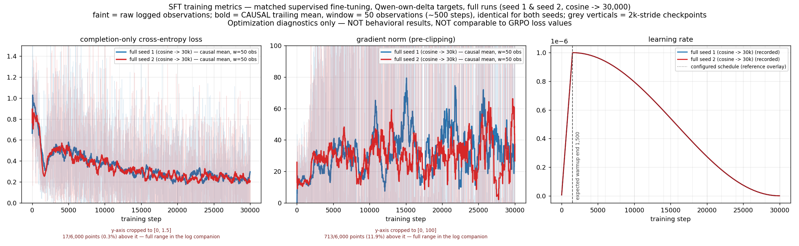
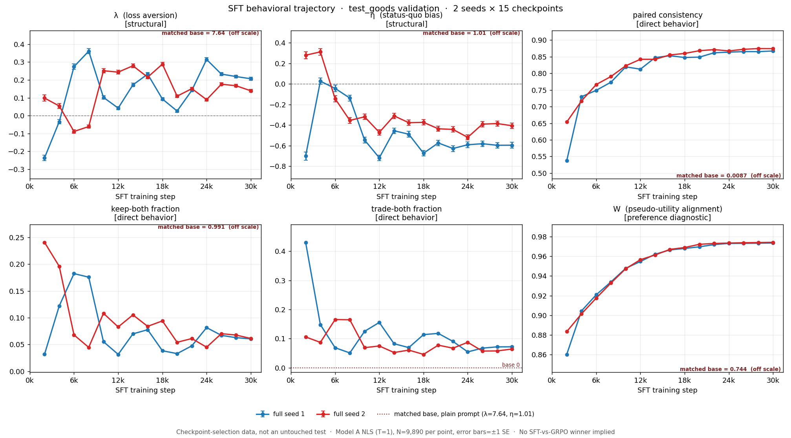

How we use SFT
We supervise Qwen2.5-7B to choose the same preferred physical good under both ownership perspectives.
1. What SFT learns
We reuse the frozen Qwen pseudo-utility difference:
If δ̃ > 0, X is preferred. The target always selects X, regardless of ownership:
| Prompt perspective | Supervised target | Physical outcome |
|---|---|---|
| Own X, offered Y | No | Keep X |
| Own Y, offered X | Yes | Trade to X |
2. How we train the model
Model and data
| Base | Qwen2.5-7B-Instruct |
| Adaptation | LoRA: r=16, α=32, dropout=0.05 |
| LoRA targets | q/k/v/o + gate/up/down projections |
| Training pool | remaining_goods.json |
| Labels | 49,450 Yes + 49,450 No |
| Exposure / seed | 30,000 prompts of 98,900 (0.303 epoch) |
| Seeds | 1 and 2 |
Optimization
| Loss | completion-only cross-entropy |
| Prompt tokens | masked with −100 |
| Micro-batch | 1 prompt per GPU |
| Gradient accumulation | 1 (none) |
| Effective batch | 1 prompt per optimizer update (1 GPU) |
| Optimizer | Trainer default; not explicitly pinned |
| Learning rate | 1×10−6 |
| Schedule | 5% warmup + cosine |
| Precision / clipping | BF16 / max gradient norm 0.1 |
| Endpoint | 30,000 steps |
| Checkpoints | 2k…30k, every 2k |
| Logging | every 10 steps |
| Exposure | SFT | Magnitude GRPO |
|---|---|---|
| Unique prompts | 30,000 | 30,000 |
| Optimizer updates | 30,000 | 30,000 |
| Generated completions | 0 | 480,000 |
| Measured time / seed | 1.40 h mean | ≈51 h |
| Signal | direct target | relative reward + KL |
Batch size matters here: with batch 1 and no accumulation, one step means one prompt and one optimizer update. The run is deliberately matched to GRPO on 30,000 unique prompts, not on epochs or generated tokens.
Recorded provenance gap: the historical manifests report the training Git commit as unknown; the exact Trainer/PEFT versions, GPU model, and default optimizer implementation are not preserved in the tracked snapshot. Future runs should hard-fail unless these fields are captured.
3. What happened during full training

Loss
It falls sharply near the start, rebounds around 2k–4k, then declines gradually. Both seeds finish with similar late medians.
Gradient norm
Easy examples give near-zero gradients; hard examples produce large spikes. About 38% of logged norms exceed the 0.1 clipping threshold.
Learning rate
Warmup ends at step 1,500, followed by cosine decay to almost zero at 30k. The recorded schedule matches the configuration.
Training result: both seeds completed 30,000 updates without numerical failure. Median target-token loss fell by about 59% in both runs. SFT has no reward, advantage, generation, or KL curve; those are GRPO quantities.
4. Evaluated SFT behavior

test_goods validation · estimates use Model A at T=1.| Model | Step | λ (SE) | η (SE) | d | Consistency | W |
|---|---|---|---|---|---|---|
| Matched base | 0 | 7.637 (0.627) | 1.007 (0.120) | 7.703 | 0.009 | 0.744 |
| SFT seed 1 · selected | 4k | −0.034 (0.012) | 0.027 (0.031) | 0.043 | 0.730 | 0.904 |
| SFT seed 2 · selected | 6k | −0.089 (0.011) | −0.143 (0.030) | 0.168 | 0.767 | 0.917 |
| SFT seed 1 · endpoint | 30k | 0.206 (0.008) | −0.596 (0.028) | 0.631 | 0.867 | 0.973 |
| SFT seed 2 · endpoint | 30k | 0.139 (0.007) | −0.406 (0.026) | 0.429 | 0.874 | 0.974 |
Fast change
Both seeds move far from the matched base by the first saved checkpoint at 2k.
Early selection
The frozen rule minimizes d = √(λ² + η²), subject to consistency ≥ 0.5. It selects 4k and 6k.
Later drift
Consistency and W keep rising, but η becomes negative. Lower training loss does not identify the best behavior.
All 30 cells contain 9,890 paired cases with zero parse failures. Each cell passed the recorded adapter/artifact and estimator checks. The historical evaluations have no eval-time manifest, so the prediction-to-adapter binding is verified from the available artifacts, not cryptographically proved.
5. Outcome
What we achieved
Two complete runs and two complete behavioral trajectories show that the supervised target is learned quickly and reproducibly.
What the curves reveal
Optimization keeps improving after behavior is already best. Later checkpoints gain consistency but develop negative η.
What is still required
Evaluate the two selected SFT models on the untouched method-comparison suite, together with the selected GRPO families.